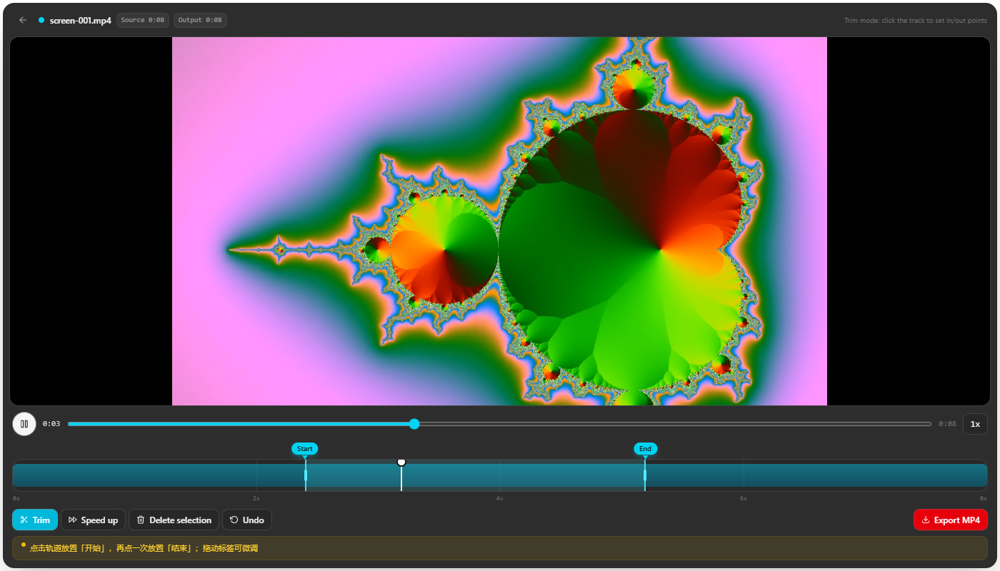

A lightweight Windows screen recorder with a built-in video editor — from capture to final MP4 in a single app
Windows 10 / 11 · 64-bit · 4 GB RAM minimum, 8 GB recommended · Auto-selects the fastest download route


Recording, editing and library — the whole workflow
ClipForge has no account system, no ads and no telemetry. Recordings stay on your own PC and all core features work fully offline. See the privacy policy.
Free · ~195 MB · one-step installer
Silent install switch /S · Previous releases · Feedback
Download routes (the fastest available route is auto-selected; switch manually if needed): loading…
中文 —— 剪录坊 ClipForge：轻量 Windows 录屏与视频剪辑工具。全屏/区域/软件窗口录制，系统声音与麦克风混录；时间轴剪辑、选区加速、一键导出 MP4。完全免费、无广告、完全离线、中英双语。返回中文首页